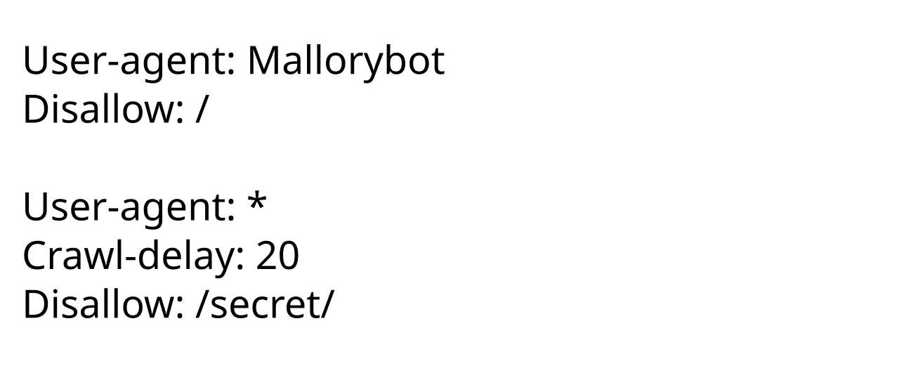

Short answer
Robots.txt is a public file of allow and disallow rules grouped by user-agent.
The figure shows a group that blocks one crawler from the whole host and a group that blocks everyone from a secret path, plus a crawl-delay line. Crawl-delay is not a promise that any crawler will honor it. Disallow stops a fetch. It does not, by itself, tell a crawler to drop a URL it already knew.
Definition
SEO Health reads robots.txt for accidents: a product folder disallowed after a security change, or a staging rule left on the live host. The file is not a place to hide thin pages you hope will still be indexed, because a disallowed URL may not be fetched for review. Noindex, when you can fetch the URL, is a different instruction and belongs in the response, not only in robots.txt.
How a crawl meets this rule
Check that important product, document, and HTML paths are not disallowed by accident.
A private file can live under a disallowed path on purpose. A manual that support staff email to customers should not. The audit lists the rule and a sample path. It does not guess how often a crawler will visit. Sitemap lines inside robots.txt, when present, are only hints to the sitemap address. They do not fix a disallow that blocks the URLs in that sitemap.

What to check
- Disallow rules that catch product or document folders
- A separate path for assets that must stay private
- Noindex is not expected to work from robots.txt alone
- Sitemap addresses that point at URLs the same file disallows
- One sample path recorded next to the rule
A practical example
After a file-server lockdown, robots.txt disallows /files/ and product pages still link to installation PDFs there. The PDFs are no longer fetchable, while the HTML products are. The health repair is to move public manuals to an allowed path and leave truly private assets disallowed. Writing a longer product introduction does not fetch the PDF.
What this does not claim
A tidy robots.txt does not guarantee rankings or citations.
Where Mika Visibility files this
Mika Visibility groups crawlability with SEO Health: robots rules, status codes, and paths a crawler can follow. Broken paths and blocked templates are health findings. Missing topics are not. GEO still depends on pages a crawler can actually reach, but reachability does not write the answer for the buyer.
The sample file in the figure uses a fictional crawler name so the article can explain groups without copying a live host’s private rules.
FAQ
What is robots.txt?
Robots.txt is a public file of allow and disallow rules grouped by user-agent.
What should a check confirm?
Check that important product, document, and HTML paths are not disallowed by accident.
Does a tidy robots file guarantee rankings?
A tidy robots.txt does not guarantee rankings or citations.
Next step
Run a structured SEO + GEO audit to see health findings, growth gaps, and a blueprint you can act on.
Clearer entities, answers, evidence, and context make pages easier to understand and reference. Results in any answer product are not guaranteed.